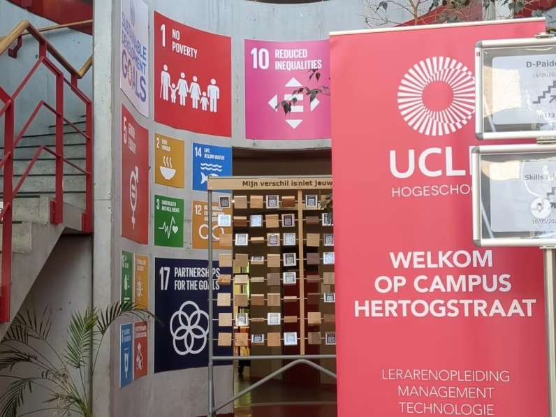
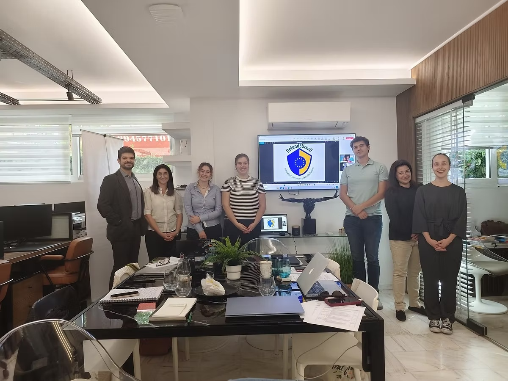

ERASMUS+ · CYBERSECURITYDefendEUrself.
DefendEUrself.
Innovative Cybersecurity Skills for Seniors.
Un progetto europeo dedicato alla sicurezza digitale e alle competenze cyber per adulti e senior, con approccio semplice, concreto e inclusivo.
LOGO UFFICIALE
Competenze digitali per vivere la rete in sicurezza.
Il progetto sviluppa strumenti educativi e attività di cooperazione per rafforzare la sicurezza online degli adulti e delle persone anziane.
Durata2025–2027
Codice2025-1-BE01-KA220-ADU-000350280
Budget€ 250.000
Ruolo 7HubPartner e dissemination manager


PERCHÉ CONTA
Più sicurezza digitale, meno esclusione.
DefendEUrself rafforza le competenze di adulti e senior su phishing, password, comportamenti online e protezione dei dati. La formazione è pensata per rendere più accessibili conoscenze utili nella vita quotidiana.
Sito del progetto